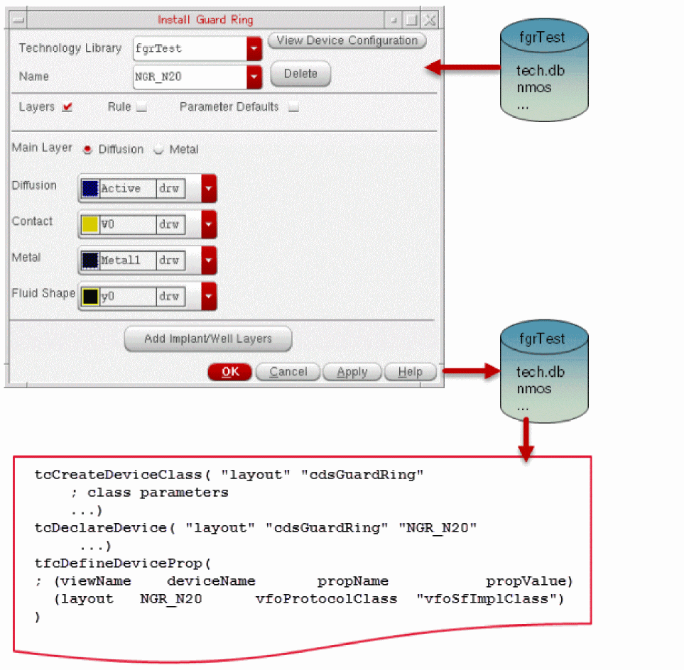
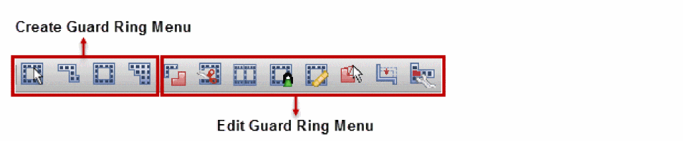
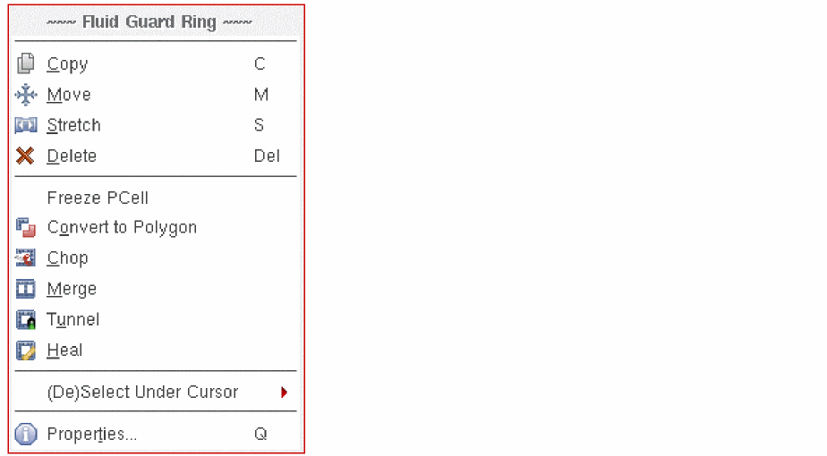
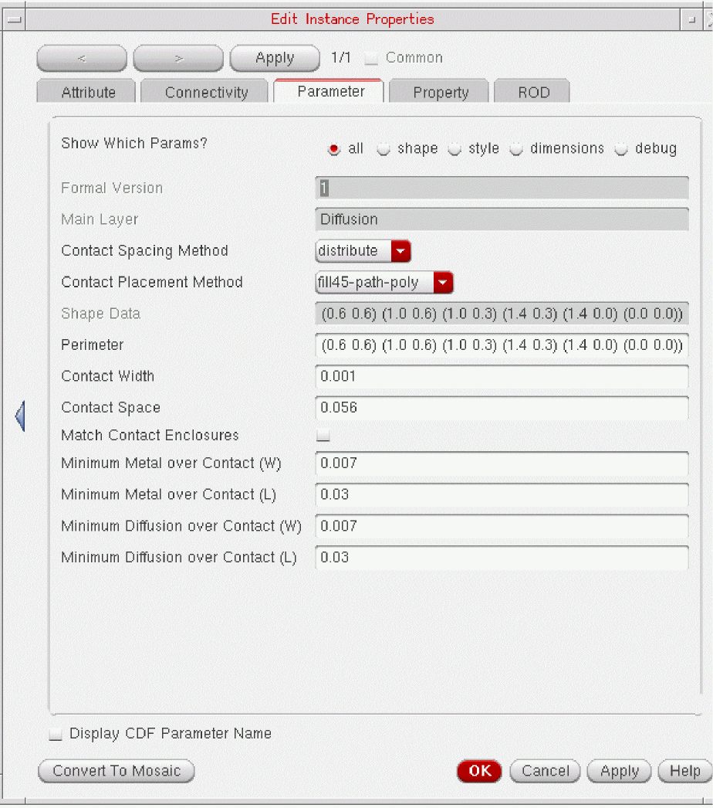

1
Introduction to Fluid Guard Rings
To implement complex designs, developers mostly use parameterized cells (Pcells) that are created using Cadence® SKILL language. For detailed information on pcells, see the Virtuoso Parameterized Cell SKILL Reference.
Though pcells provide a strong effective programmatic way to edit the designs, with the growing complexities, there was a need for an intuitive capability to visually modify shapes in the design. This need brought into being the concept of fluid shapes and the fluid guard rings (FGR), which are discussed in this chapter. An FGR is a fluid SKILL pcell with powerful creation and graphical editing capabilities. A fluid SKILL pcell is a pcell with one or more fluid shape.
Fluid Shapes: Concepts
Any shape that is registered using the dbSetFluidShape SKILL API, as shown below, is a fluid shape.
dbSetFluidShape( d_shapeId t_shapeName ) => t / nil
A fluid shape is selectable from the top level in Virtuoso Layout Suite L (Layout L). Therefore, it supports editing features like any other level 0 shape.
You can use the following SKILL APIs to retrieve the fluid shape information:
dbGetFluidShapes( d_cvId ) => list(fluidShape1 fluidShape2 …) / nil
dbGetFluidShapeByName( d_cvId t_shapeName ) => d_fluidShapeId / nil
dbGetFluidShapeName( d_fluidShapeId ) => t_shapeName
dbIsFluidShape( d_shapeId ) => t / nil
A fluid shape is defined using the following two parameters:
The infrastructure supports three styles of fluid shapes: path, polygon, and rectangle. The following images illustrate different styles of fluid shapes and their representation in the infrastructure:
When you edit a fluid shape, a set of SKILL updater functions associated to it are called from the associated pcell submaster.
Fluid Pcells
A pcell with one or more fluid shapes make a fluid pcell. Fluid pcell can be edited graphically (like shapes) and whose behavior in response to editing commands can be defined and customized using SKILL language. Some examples of fluid pcells are: guard rings, space filling capacitors, and filling structures.
The following figure shows a representation of a fluid pcell:
For detailed information about fluid pcells, refer to the Creating Fluid SKILL Pcells application note available on the
Fluid Guard Rings: Concepts
FGRs are a type of fluid pcells in which all shapes are drawn based on the fluid shape points. Unlike standard pcells, FGRs can be created and graphically edited on the canvas itself.
The following figure shows a cross-section of an FGR device.
Virtuoso provides support for the following two types of FGRs:
VLS-based Fluid Guard Rings
The VLS-based FGRs are provided by default with Virtuoso that automatically loads the related set of implementation files (vfo*.ils) at the time of initialization. These files provide the Virtuoso Fluid Object (VFO) infrastructure that enables you to install, create, and edit the VLS-based FGRs.
The VLS-based solution primarily involves installation, creation, and editing of an FGR using the default forms that can be accessed from Layout L. For example:
-
Install an FGR using the Install Guard Ring form that allows you to define and save an FGR to the required technology library.
Once an FGR device gets installed through this FGR installation form, thetcCreateDeviceClass,tcDeclareDevice, andtfcDefineDevicePropconstructs in the technology file get created or updated accordingly. -
Create an FGR using the Create Guard Ring form displayed using the Create – Fluid Guard Ring menu. This form allows you to create an FGR of the required shape. To access the related toolbar, through the Window – Toolbars menu, click the Guardring submenu. The following FGR toolbar is displayed and it provides the icons that enable you to create and edit FGR instances.
 -
Edit the fluid shape in an FGR using one of the following methods:
- Use the edit commands available in the FGR toolbar shown above.
-
Use the additional editing commands that are available in the context-sensitive Fluid Guard Ring menu, which is displayed when you right-click any FGR instance. Alternatively, you can access these commands from the Edit menu of the Layout L window.
-
Use the Edit Instance Properties form displayed after you select a fluid shape and do a right click it. This form allows you to change the parameters defined in the VFO infrastructure.
For detailed usage information about the VLS-based FGRs, refer to Virtuoso Fluid Guard Ring User Guide and Virtuoso Fluid Guard Ring Frequently Asked Questions.
Custom Fluid Guard Rings
A customized FGR can either be a pcell developed in SKILL with customer-specific capabilities and features, or a hierarchical FGR pcell developed by encapsulating a customer-developed pcell guard ring.
Virtuoso allows you to develop custom FGRs by extending the classes in VFO infrastructure to incorporate user-defined capabilities or features. VFO infrastructure is also enhanced to provide pitch support in custom FGRs. For detailed information about the VFO infrastructure and pitch support, refer to Chapter 2, “Fluid Guard Ring Infrastructure” and Chapter 3, “Pitch Support in Fluid Guard Ring”.
For information about how to extend classes in infrastructure to develop custom FGRs, refer to Chapter 4, “Develop and Define a Fluid Guard Ring Device”.
The customization of FGR can include customization of Create Guard Ring form, which enables you to add user-specific fields to the form and customization of fluid editing commands. For detailed information, refer to Chapter 5, “Customize Create Guard Ring Form.” and Chapter 6, “Write Customized Fluid Editing Commands.”
You can maintain two versions of an implementation class that is available in the VFO infrastructure to contain different drawing codes. For detailed information, refer to Chapter 7, “Methodology to Maintain Versions of Implementation Class.”
These custom FGRs can also be read in third-party tools by loading relevant VFO infrastructure files. For detailed information about how to manually load the VFO infrastructure, refer to Chapter 8, “Fluid Guard Ring Packaging in PDK.”
While developing a custom FGR, Cadence recommends some best practices to achieve reliable results. For detailed information, refer to Appendix A, “Best Practices for Developing a Fluid Guard Ring.”
There are some FGR-specific Layout L environment variables that can be used to control the behavior of FGRs in Layout Editor environment. For detailed information, refer to Appendix B, “Fluid Guard Ring Environment Variables.”
Return to top